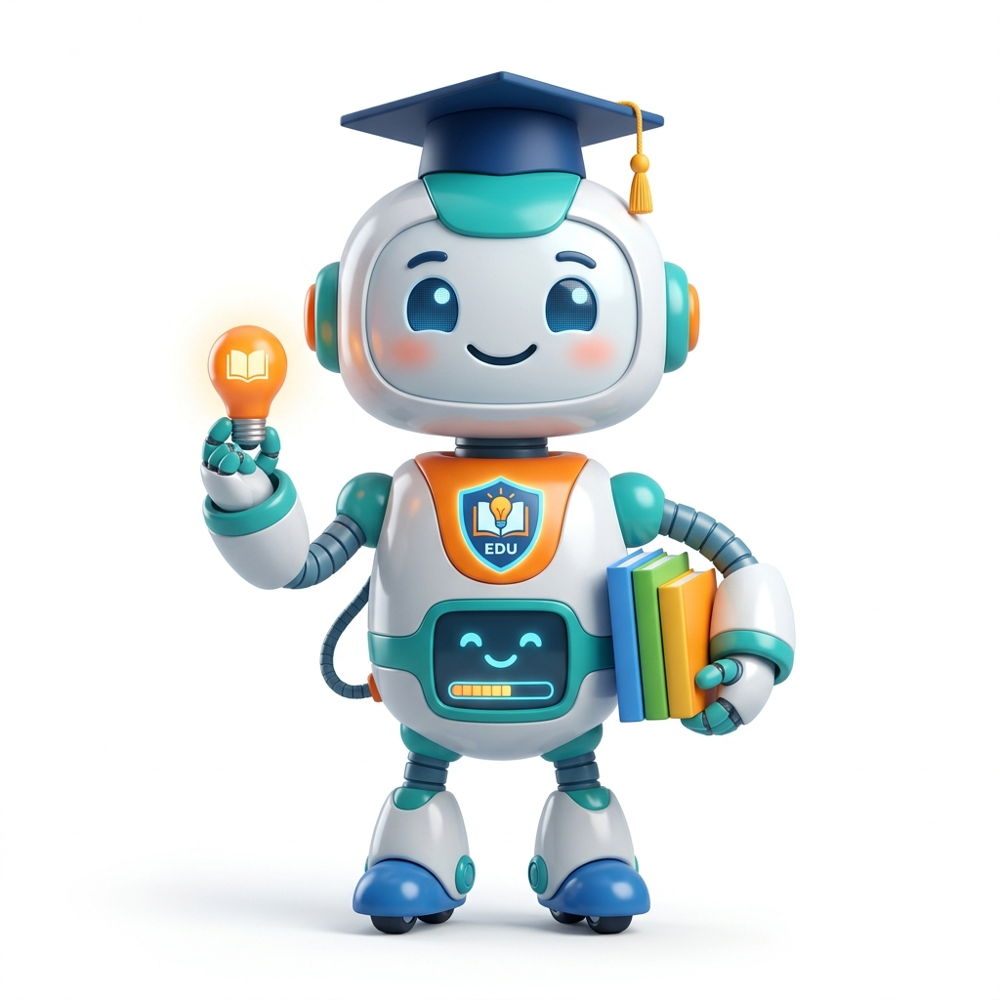

EaD
Introdução Geral à Inteligência Artificial
Domine o vocabulário e o entendimento de LLMs. Um guia em ritmo livre para quem está começando.
Saber maisPlataforma estratégica do IFMG em conjunto com o CEIA, idealizada para capacitar nossos servidores e modernizar a educação através do domínio em Inteligência Artificial.
O Instituto Federal de Minas Gerais está investindo rapidamente em inovação para que a comunidade não apenas utilize a Inteligência Artificial, mas a compreenda e aplique com um profundo senso de ética.
Nosso comitê busca assegurar que a Indústria 4.0 seja pautada pela eficiência do Governo, ao mesmo tempo que protege os dados governamentais e fomenta melhorias nas salas de aula.
Seja qual for a sua área de atuação, o IFMG e o CEIA prepararam trilhas exclusivas que vão do básico à aplicação profissional profunda de Inteligência Artificial.
Domine o vocabulário e o entendimento de LLMs. Um guia em ritmo livre para quem está começando.
Saber maisUma imersão completa sobre comandos precisos e como aprimorar seus Planos de Ensino em segundos.
Saber maisDirecionado para a Gestão de Campi. Utilize planilhas inteligentes, Python automatizado e machine learning simples.
Saber maisEntenda quando e como utilizar o que há de melhor disponível nas arquiteturas abertas ou proprietárias homologadas.

1